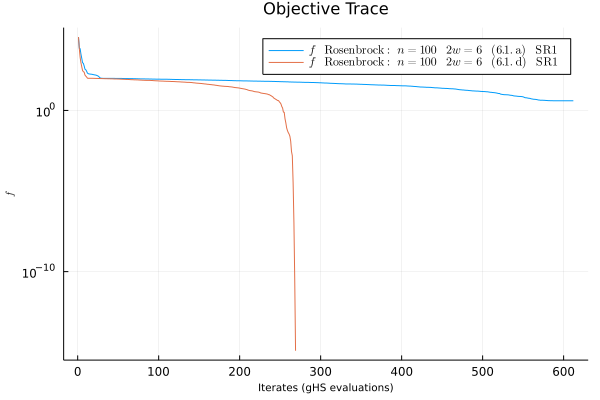

Simple Use Case
Consider the generalized rosenbrock as our objective function
\[f(x) = \sum_{i=1}^{N-1} \left[100(x_{i+1}^2 - x_i^2)^2 + (1 - x_i)^2\right].\]
We manually translate the formula above into Julia shown below.
julia> function rosen(x)
N = lastindex(x)
100sum((x[i + 1] - x[i]^2)^2 for i = 1:N-1) + sum((x[i] - 1)^2 for i = 1:N-1)
endDifferentiating the objective function and performing a Julia translation below.
julia> function ∇rosen!(g, x)
N = lastindex(x)
g[1] = -2 * (1 - x[1]) - 400x[1] * (-x[1]^2 + x[2])
for i in 2:N-1
g[i] = -2 * (1 - x[i]) + 200 * (-x[i - 1]^2 + x[i]) - 400x[i] * (-x[i]^2 + x[1 + i])
end
g[N] = 200 * (x[N] - x[N-1]^2)
return g
end
∇rosen! (generic function with 1 method)The optimize routine will attempt to find $x$ meeting the first-order neccessary condition for being a local minimum of $f$, i.e.
\[|| \nabla f(x) || \leq \epsilon.\]
Consider dimension $n=100,$ and we randomly assign x₀ to be a point in the $100$-dimensional hypercube.
julia> x₀ = randn(100);The entry point of scheme $7.1$ occurs below.
julia> optimize(rosen, ∇rosen!, x₀)
SUCCESS 8.070336658758971e-7 ≤ 1.0e-5 in 528 steps
--------------------------------------
Minimum f: 5.311172726630893e-16
Minimum ||∇f||: 8.070336658758971e-7
Minimum Δ: 0.005844719845773086
Minimum Step: 6.030122388810338e-8
Model:
-------------------
objective: rosen
gradient: ∇rosen!
initial iterate: [0.132719, ..., 0.554169, -0.861590, -0.025498]
dimension: 100
directory: /Users/daniel/.julia/dev/BlockOpt/docs/Missing
objective formula: missing
Driver:
-------------------
S_update: S_update_c
QN_update: SR1
pflag: false
Options:
samples: 6
Δ_max: 100.0
δ_tol: 1.0e-12
ϵ_tol: 1.0e-5
max_iterations: 2000
Trace:
-------------------
Weaver:
f_vals: [37156.548946, ..., 0.000000, 0.000000, 0.000000]
∇f_norms: [15116.003941, ..., 0.000293, 0.000016, 0.000001]
Δ_vals: [5.984993, ..., 0.187031, 0.187031, 0.187031]
p_norms: [5.172082, ..., 0.000045, 0.000002, 0.000000]
ρ_vals: [0.931152, ..., 0.985198, 0.983784, 0.986492]
Profile:
trs_counter: 528
trs_timer: 0.07330679893493652
ghs_counter: 430
ghs_timer: 0.07087516784667969Here, the output shows a Simulation instance in a terminal state, which happens to be a success!
Constructing a Model
We extend our simple use case to define a model, which creates a directory to keep track of various simulations throughout the model's life.
julia> m = Model("Rosenbrock")
Model:
-------------------
objective: missing
gradient: missing
initial iterate: missing
dimension: missing
directory: /Users/daniel/.julia/dev/BlockOpt/docs/Rosenbrock
objective formula: missingAbove is an empty model which is incrementally loaded.
julia> objective!(m, rosen)
rosen (generic function with 1 method)
julia> gradient!(m, ∇rosen!)
∇rosen! (generic function with 1 method)
julia> initial_iterate!(m, x₀)
julia> m
Model: Rosenbrock
-------------------
objective: rosen
gradient: ∇rosen!
initial iterate: [-1.177973, ..., -0.535732, 1.304151, 1.194971]
dimension: 100
directory: /Users/daniel/.julia/dev/BlockOpt/Rosenbrock
objective formula: missingThe model is now loaded to a final state, implying that the objective and gradient function may no longer be modified.
We optionally chose to set a formula for the objective function of model m. The formula will be displayed when plotting simulations of the m.
julia> rosen_formula = "\$\\sum_{i=1}^{N-1} \\left[100(x_{i+1}^2 - x_i^2)^2 + (1 - x_i)^2\\right]\$";
julia> formula!(m, rosen_formula)
"\$\\sum_{i=1}^{N-1} \\left[100(x_{i+1}^2 - x_i^2)^2 + (1 - x_i)^2\\right]\$"
julia> m
Model: Rosenbrock
-------------------
objective: rosen
gradient: ∇rosen!
initial iterate: [-1.177973, ..., -0.535732, 1.304151, 1.194971]
dimension: 100
directory: /Users/daniel/.julia/dev/BlockOpt/Rosenbrock
objective formula: loadedOur model m is entirely constructed. Observe the directory path above; it was created in the current working directory using the name given to the model constructor.
See the Model section of Manual for more information.
Constructing a Driver
The goal of creating a model is to record simulation information over multiple trials, where each trial uniquely incorporates the second-order hessian information into a steps QN update as dictated by the simulation driver.
A default driver is constructed with an empty argument list.
julia> default_driver = Driver() # default parameters and options
Driver:
-------------------
S_update: S_update_c
QN_update: SR1
pflag: false
Options:
samples: 6
Δ_max: 100.0
δ_tol: 1.0e-12
ϵ_tol: 1.0e-5
max_iterations: 2000The default_driver is created in all optimize calls that don't specify a Driver.
Below we pass PSB as argument for the QN_update keyword.
julia> psb_driver = Driver(QN_update = PSB)
Driver:
-------------------
S_update: S_update_c
QN_update: PSB
pflag: false
Options:
samples: 6
Δ_max: 100.0
δ_tol: 1.0e-12
ϵ_tol: 1.0e-5
max_iterations: 2000See pflag, S_update, and Options manual section for information on the three other keyword arguments.
Configurations
By passing a model to optimize with several unique drivers, we gain insight into the effects of each driver configuration. We saw above how m performed with the default driver configuration; now, we run it with the PSB QN update
julia> optimize(m, psb_driver)
FAIL 3.566862431214296 ≰ 1.0e-5 in 2000 steps
--------------------------------------
Minimum f: 28.577172626527943
Minimum ||∇f||: 1.1239260593910936
Minimum Δ: 0.0055605929272336966
Minimum Step: 0.005560592927233694
Model: Rosenbrock
-------------------
objective: rosen
gradient: ∇rosen!
initial iterate: [-1.177973, ..., -0.535732, 1.304151, 1.194971]
dimension: 100
directory: /Users/daniel/.julia/dev/BlockOpt/Rosenbrock
objective formula: $\sum_{i=1}^{N-1} \left[100(x_{i+1}^2 - x_i^2)^2 + (1 - x_i)^2\right]$
Driver:
-------------------
S_update: S_update_c
QN_update: PSB
pflag: false
Options:
samples: 6
Δ_max: 100.0
δ_tol: 1.0e-12
ϵ_tol: 1.0e-5
max_iterations: 2000
Trace:
-------------------
Weaver:
f_vals: [35819.088644, ..., 28.644942, 28.610707, 28.577173]
∇f_norms: [14013.886569, ..., 3.567714, 3.387636, 3.566862]
Δ_vals: [5.694047, ..., 0.044485, 0.044485, 0.044485]
p_norms: [4.372943, ..., 0.014306, 0.014309, 0.014314]
ρ_vals: [1.128439, ..., 1.664845, 1.670837, 1.665141]
Profile:
trs_counter: 2000
trs_timer: 3.959573268890381
ghs_counter: 1974
ghs_timer: 0.4726881980895996Here, the simulation failed to reach a successful terminal state and instead reached the maximum allowed iterations. We expect that the PSB update requires more iterations than the default SR1 update. Letting this guide us, we increase the max_iterations of the psb_driver to a larger value.
julia> max_iterations!(psb_driver, 10000)
10000
julia> optimize(m, psb_driver)
SUCCESS 9.93303363395617e-6 ≤ 1.0e-5 in 5578 steps
--------------------------------------
Minimum f: 3.986623854354119
Minimum ||∇f||: 9.93303363395617e-6
Minimum Δ: 0.004905284751681128
Minimum Step: 6.309128627600796e-8
Model: Rosenbrock
-------------------
objective: rosen
gradient: ∇rosen!
initial iterate: [-1.177973, ..., -0.535732, 1.304151, 1.194971]
dimension: 100
directory: /Users/daniel/.julia/dev/BlockOpt/Rosenbrock
objective formula: $\sum_{i=1}^{N-1} \left[100(x_{i+1}^2 - x_i^2)^2 + (1 - x_i)^2\right]$
Driver:
-------------------
S_update: S_update_c
QN_update: PSB
pflag: false
Options:
samples: 6
Δ_max: 100.0
δ_tol: 1.0e-12
ϵ_tol: 1.0e-5
max_iterations: 10000
Trace:
-------------------
Weaver:
f_vals: [35819.088644, ..., 3.986624, 3.986624, 3.986624]
∇f_norms: [14013.886569, ..., 0.000010, 0.000011, 0.000010]
Δ_vals: [5.023012, ..., 0.039242, 0.039242, 0.039242]
p_norms: [4.096592, ..., 0.000000, 0.000000, 0.000000]
ρ_vals: [1.160497, ..., 1.756820, 1.760699, 1.763252]
Profile:
trs_counter: 5578
trs_timer: 0.891240119934082
ghs_counter: 5552
ghs_timer: 0.9388515949249268Allowing for $10,000$ iterations is more then enough to reach convergence within the the tolerance given by ϵ_tol(psb_driver) ($1.0e-5$).
See the Options and Driver sections of the Manual for more information on Driver options and configurations.
Simulation Recipes
Let us assign the variables s1 and s2 as returned terminal simulations driven by drivers d1 and d2 as defined below.
julia> d1 = Driver(S_update=S_update_a)
julia> d2 = Driver(S_update=S_update_d)
julia> s1 = optimize(m, d1);
julia> s2 = optimize(m, d2);We have configured drivers d1 and d2 to use updates (6.1.a) and (6.1.d).
Next, we create the objective function trace plot with the Julia Plots package. The plotted data may be accessed using f_vals(s1) and f_vals(s2).
julia> using Plots; # to install: using Pkg; Pkg.add("Plots")
julia> objtrace(s1, s2)
The normed gradient data at each successful iterate may be accessed through ∇f_norms(s1) and ∇f_norms(s2).
julia> gradtrace(s1, s2)See: radiustrace, steptrace, rhotrace and corresponding ! versions.
Weave
Building upon the last example, we can skip generating the individual plots and weave one Weave.jl trace report.
julia> Using Plots
julia> weave(s1, s2);The model directory of s1 now contains a trace.html report which can be viewed in the browser.
Here is another report comparing the generalized Rosenbrock simulations driven by the $6$ different sample direction update configurations.